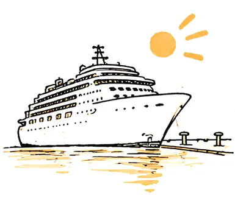
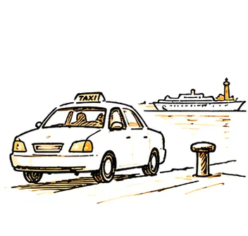
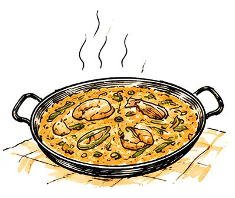
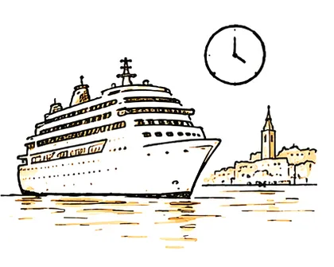

Valencia tiene unos 300 días de sol al año. Aprovechemos unos cuantos.
Sin plataformas por en medio.

Tu barco atraca
Un taxi que te reservo El centro, a pie
El centro, a pie
Algo rico de comer
De vuelta a bordo, a tiempo
Ciutat Vella, a pie y a tu ritmo.


Solo tú y la gente con la que vienes. Empezamos donde quieras, paramos cuando tengas hambre y nos saltamos lo que no te interese.
- Paseo por el centro · 3 h
- 150 €
- Paseo personalizado · 4 h
- 200 €
- Paseo personalizado · 6 h
- 300 €
- Cada persona extra, hasta 8
- 10 € por hora
- Torres de SerranosPuerta de la muralla del siglo XIV. Se puede subir, y la vista sobre el viejo cauce es de las mejores gratis de la ciudad.
- Plaza de la VirgenLos jueves a las doce el Tribunal de las Aguas sigue reuniéndose en la puerta de los Apóstoles. Llevan así más de mil años.
- Catedral y Micalet207 escalones hasta arriba. Y dentro, un cáliz que en Valencia dicen que es el Santo Grial.
- La Lonja de la SedaPatrimonio de la UNESCO desde 1996. Fíjate en las gárgolas, alguna es bastante grosera.
- Mercado CentralUnos 300 puestos bajo una cubierta modernista. Aquí comemos algo.
- Plaza Redonda → horchataCon fartons para mojar.
¿Llegas en crucero? Escríbeme y te reservo un taxi de confianza desde la terminal. Si vamos justos, el taxi de vuelta al puerto lo pago yo. Del puerto al centro (guía en inglés) →
Elige un día. Es tuyo.
Solo salen los días que tengo libres. Elige 3, 4 o 6 horas en el calendario. ¿Sois más de 4? Pon el número en la reserva.
Protección de datos: Nicolás Maldonado (300sun) usa los datos de tu reserva solo para organizar tu paseo. El calendario lo gestiona Cal.com (EE. UU.). No cedemos tus datos a nadie ni los usamos para publicidad. Puedes acceder a ellos, rectificarlos o borrarlos cuando quieras. Política de privacidad
¿Prefieres preguntar antes? Mándame la fecha por WhatsApp y te la confirmo.
Pedir fechaCocínala. Pelea por el socarrat.


En el taller cocinas la paella valenciana original desde cero y luego te sientas en el jardín a comértela con una jarra de sangría.
Esa capa tostada pegada al fondo es el socarrat. Es lo mejor.
Desde 65 € por persona. Vale para una pareja o para un grupo de colegio de cincuenta.
- Pollo
- Conejo
- Ferraura, la judía plana
- Garrofó
- Tomate rallado
- Aceite de oliva, bastante
- Azafrán
- Arroz redondo de la Albufera
- Romero, si lo dice quien cocina
- Chorizo
- Gambas con pollo
- Guisantes


Una cama para cada uno. Profes incluidos.
Viajes de estudios, grupos universitarios, equipos, coros. Tres hostels trabajando juntos: más de 200 camas en habitaciones compartidas y unas pocas privadas para los profesores. Una sola persona para las camas, la paella y los paseos.
La playa está a un tranvía. Centro por la mañana, paella a mediodía, playa por la tarde.
- Fechas de llegada y salida
- Cuántos alumnos y cuántos adultos
- Edades, si es un colegio
- Presupuesto por noche, más o menos
- Lo que queráis añadir: paella, paseos, día de playa


Lo que la gente pregunta.
Vengo en crucero. ¿Llego a tiempo al barco?
Planificamos el paseo desde tu hora de embarque, no desde la hora de llegada del itinerario, y terminamos con margen de sobra para el taxi al puerto. Si el barco llega tarde, acortamos la ruta.
¿Es una visita guiada oficial?
Es un paseo privado con alguien de aquí. Caminamos juntos por la calle. Para entrar en la Catedral o la Lonja entras con tu entrada (y la audioguía) y yo te espero en la puerta.
¿Vale para niños o abuelos?
Valencia es llana. Podemos acortar el paseo, parar más a tomar café y saltarnos los 207 escalones del Micalet.
¿Cómo se paga?
Cuando reservas, te mando un enlace de PayPal para una señal de 30 €. Con eso la fecha es tuya. El resto se paga al acabar el paseo, en efectivo, Bizum o PayPal. Si cancelas hasta 48 horas antes, te devuelvo la señal entera.
¿Y si llueve?
Aquí llueve poco. Si toca, el Mercado Central y la Lonja están a cubierto, o lo cambiamos de día si tus planes lo permiten.
¿Puedo hacer la paella sin el paseo?
Sí, cada cosa se reserva por separado. Mucha gente hace las dos.
Somos 120. ¿Somos demasiados?
No. Mándanos fechas y número de personas y te decimos qué hay libre entre los tres hostels.
Cuéntame qué buscas.
Rellena esto y se abre WhatsApp con el mensaje ya escrito. Normalmente contesto el mismo día.